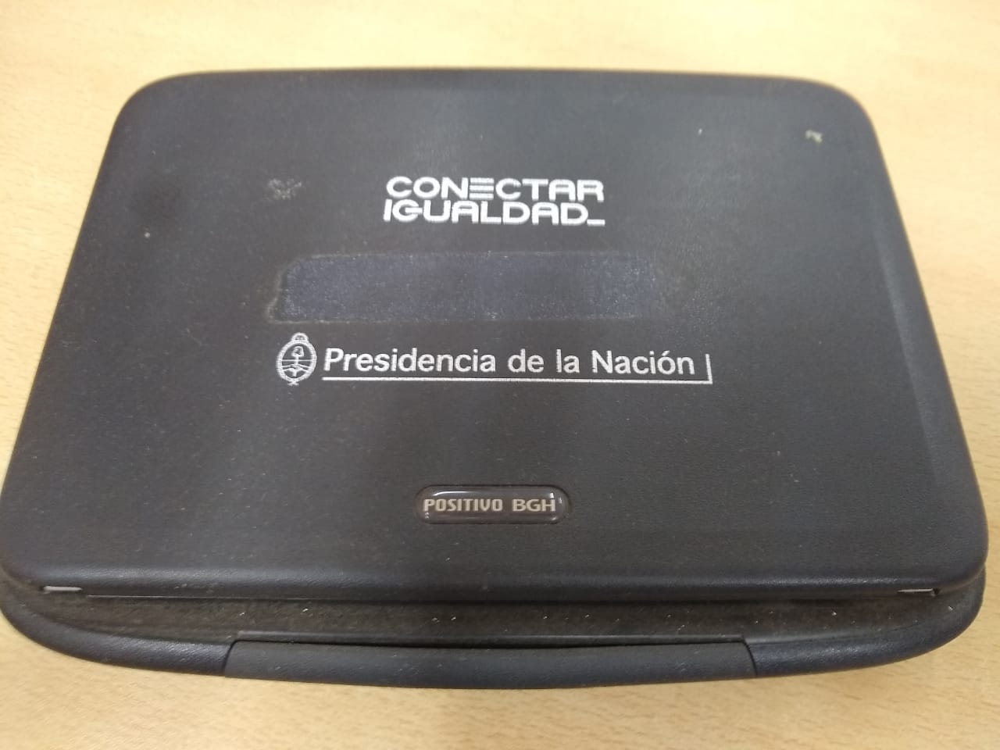

Inclusividad = Conectividad
La pandemia también es una oportunidad para que la solidaridad no sea solo un discurso, como muestra de ello estamos muy orgullosos de poder contarles que hemos recibido en la institución 3 netbooks las cuales fueron donadas por ex alumnos y profesores que ya no hacían uso de las mismas. De este modo son 3 oportunidades de conectividad que podemos brindarles a 3 alumnos a 3 familias….
Aprovechamos esta buena noticia para pedirle a toda la comunidad de la EPET Nº6 que siempre nos
acompaña que se sume a la donación o préstamo de estos insumos para poder seguir llevando conectividad y mismas oportunidades a más familias. Aplaudimos y agradecemos a los que colaboraron y deseamos que se multipliquen los buenos gestos!!